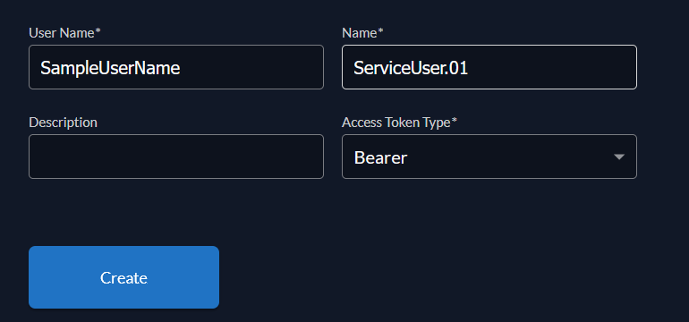
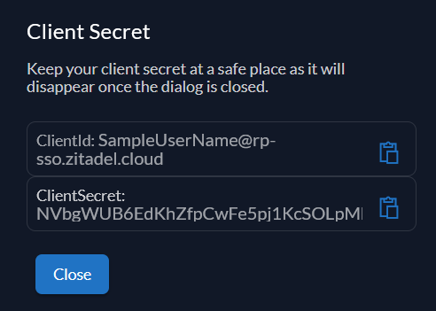
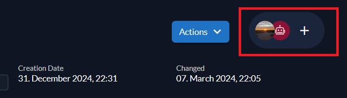

Basics
First, install the library via Composer:
Then, import the Composer autoload in your PHP project.
Before we import the required components, we have to create a settings array with the following information:
Domain: The domain of your Zitadel instance without a slash at the end.
serviceUserToken: The Token of a service User
Create a service user
Go to the user tab of your Zitadel instance. Then, click on Machines and New.
Fill out the form and click "Create". IMPORTANT: Access Token Type has to be Bearer
 Click on Actions and Generate Client Secret.
The displayed client secret is the service user token.
 Now we have to grant the permissions to the service user. Go to the Organization-Tab and click this Plus-Button:
 Select the service user from the list and check the permissions, the service user should have.
userToken: The token of a user. The user token is only required for a few operations.
You must always pass the settings array as a parameter to a class when you initialize it. For example: